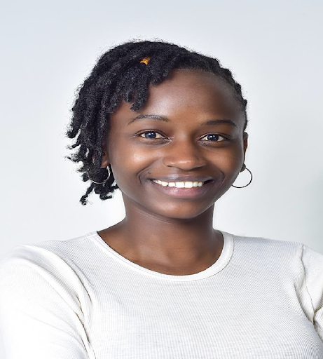

My name is Teresia Ogamba. Most people just know me as Tess Ogamba. I’m 25 years old. I recently quit employment to work as a full-time transcriber. This would not have been possible without Ajira Digital.
I stumbled upon Ajira Digital program when I had beaten down by life. Being an orphan in university, I was struggling both financially and mentally. I had support from some amazing human beings but there was only so much they could do. I had financial responsibilities that I couldn’t run away from. I tried to look for a part time job but who would hire a student?
One day a friend told me about online writing. I looked into it, tried and started making some money. sometimes Kshs. 800, sometimes Kshs. 2000. I was just finding my feet as an online writer when I heard that the Ajira Digital program was looking for mentors. This was in 2017. I applied for the position without a second thought. Now that I think about it, it’s the best decision I have ever made in my life. I got the opportunity to transfer the little knowledge I had acquired about online writing to young people like me. To mentor them and learn from them. I also got to make a little money from that. I made 5000 Kenya shillings as a mentor for the Ajira Digital program. My first ever paycheck.
Transcription as a skill was my saving grace. I was able to eat every day while in university and cater for my other needs because of transcription. I paid for my graduation with transcription money and graduated in 2019 from JKUAT with a Bachelor of Science in Biostatistics.
In 2019, I got featured as a success story by Reeta Roy, the President and CEO of the MasterCard Foundation during the Young Africa Works launch in Kenya. https://mastercardfdn.org/reeta-roys- remarks-from-the-young-africa-works-in-kenya-launch/ I have had the opportunity to work with brands like Huawei Kenya, transcribe content for NGOs like ACEPIS and through that able to interact with content from all over the world.
Ajira Digital made it possible for me to create my company ItsTessKE Limited through which I train and mentor young people in transcription. I also give aspiring transcribers jobs. As we speak, I have more than 12 transcribers that I work with who are able to make money from transcription as well as a YouTube channel where I educate people on transcription and give tips on how to become good transcribers. watch youtube video.
My dream is to get more transcription clients so I can be able to give transcription jobs to more people. I also want more people to know transcription and take it up without fear in order to live better lives.
I am a self-taught data analyst and tech is my paly ground, My Name is Felix Mulei I currently work a freelance data analyst, opinion mining professional and a cloud trainer. I was among the first beneficiaries of the Ajira Digital program, coupled with prior knowledge and skills of self-taught freelancing from university, I was able to get started online quickly. The training and guidance that I received helped me scale up quickly and within a few months I was established in the online workspace.
It was difficult to get people doing opinion mining, but over the years I have been able to build a community of people that I have trained and mentored. My life has been changed by the skills I have picked and have been able have been able to transform my community.
Currently I’m an AWS (Amazon Web Services) cloud trainer with Ajira Digital where I’m doing skill transfer to youth from different parts of the country. Through this work we have impacted the lives of my community of through trainings. My trainees able to get jobs in different organization and now can earn a decent. It is my dream and wish to see every young person in the county having a source of income and this dream is what drives me to always help those I come across. With combined efforts from different stakeholders, I’m sure this will be achieved, and we will be able to use the skills learned in school and other to start earning online.


Celestine Ukpere Consulting was launched in 2017 after attending the AJIRA Digital Program. The program availed numerous opportunities for the consulting company. There were numerous projects that we were able to be part of due to the AJIRA digital program including the launch of Glaxotech E- Learning Kenya a woman-owned ed-tech based startup which was a partner to Google’s sponsored Digital Skills for Africa training for the youth program as training (17000 youth trained nationally in 5 months) and curriculum implementation partner. Celestine Ukpere Consulting has consulted in various capacities for many programs including community impact assessor for the program.
She is an expert on the Education and Skills at the World Economic Forum and delivers through her consulting company does Digital Skills programs for the SMEs and Youth in the diverse groups who are looking at upskilling through digital skills. She has trained through Facebook's Digify PRO 130 youth with 90 percent placement into digital marketing jobs and opportunities in agencies and companies.
Norwegian Refugee Council’s (NRCs) Refugee Employment and Skills Initiative (RESI) a programme developed by the International Trade Centre (ITC), for the Online Freelancing value chain in Dadaab with 200 refugees trained and given an opportunity to be gig workers, CUC has employed 15 Digital Skills trainers for the various programs it consults on.